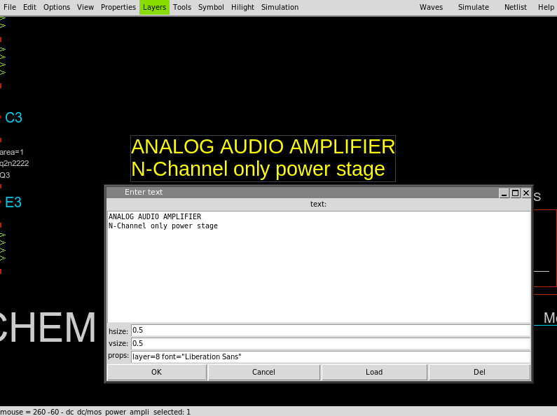
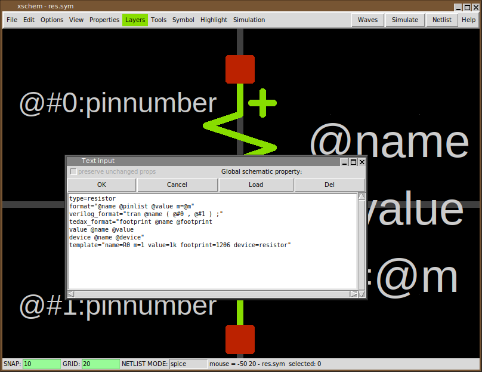

XSCHEM PROPERTIES
Properties are text strings that are associated to XSCHEM objects. All graphic primitives support properties.
- Wires
- Lines
- Rectangles
- Texts
- Symbols
Consider for example the res.sym symbol (you may open it with the Open menu item) if you click inside one of the red pins and press the 'edit property' bindkey 'q' a dialog box shows the property string associated with the selected pin:

The name=p dir=inout property string tells that the selected pin name is 'p', this will be the symbol positive pin name in the produced netlist. The property string also defines a dir attribute with value inout. This tells XSCHEM that electrically this is an input/output pin. This is important when producing VHDL/verilog netlists. The second (bottom) pin property string is name=m dir=inout and this defines the negative pin. The text primitives also have properties. For texts the property string is simply the displayed text.
GLOBAL PROPERTIES
If you click outside of any displayed graphics in XSCHEM the selection set will be cleared. Clicking the edit property 'q' key when nothing is selected will display the global property string of the schematic (.sch) or symbol window (.sym). So, in addition to properties associated to graphical objects and symbols we also have properties associated to schematic (.sch) and symbol files (.sym)

The format attribute defines the format of the SPICE netlist.
The SPICE netlist element line starts with the
symbol name (in this case a resistor so 'rxxxxx'), the list of pins, the
resistor value and a multiplicity factor (m).
@pinlist will resolve to the parent nets attached to the resistor
nodes, in the order they appear in the
symbol (in this example; first node = 'p', second node = 'm').
We will return on component instantiation later, but for now,
considering the following picture:
the @pinlist for the r1 component will expand to POS NEG.
@value resolves to the resistor value assigned in component instantiation.
The template attribute defines default values if component
instantiation does not define values for them.
If you want to add a pin to an existing symbol you may copy one
of these. Select a pin, press the copy 'c'
bindkey and place a new copy of it somewhere.
After copying the pin you may change its properties, for example you
will change its property string to
something like: name=body dir=in (just as an example).
Note that pins in symbols are nothing more than rectangles
drawn with the pin layer; instead of copying an
existing one you may create it from scratch, select the pin
layer from the Layers menu, point the mouse where
you want to place the pin, press the 'r' bindkey and drag the mouse
to the desired pin size. There is no inherent limit or assumption
on pin sizes, you are allowed to create any rectangular/square sizes.
After placing the rectangle you must create a property string by selecting it
and pressing the 'q' bindkey. An empty string is shown in the
dialog. Add a valid string as explained and you are all done.
PIN ORDERING
An important aspect for symbols is the order of the pins when producing the netlist. There are some rules in the order for example in SPICE netlist syntax; for example a Bipolar transistor has 3 pins and should be in a specific order (collector, base, emitter). When done placing pins on a newly created symbol you can specify the order by selecting the one that must be the first in the netlist and hitting the <ctrl>s bindkey; set the number to zero; this will make the selected pin the first one. Next, select the second pin and again hit <ctrl>s, set its number to 1 and so on. By doing so you have defined a specific pin ordering of the symbol.